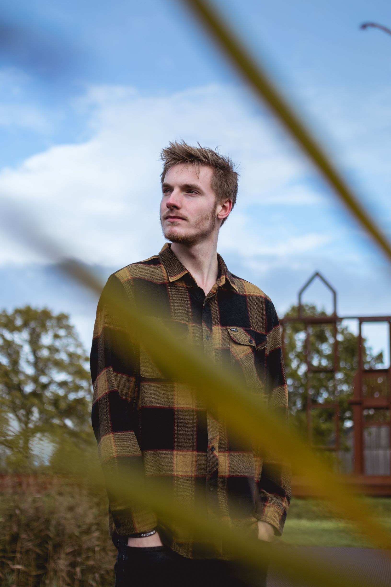

Jaap van Hamond is a composer, producer and artist from the Netherlands, born in 1997. In 2016 he began studying Music Technology at the HKU University of the Arts in Utrecht, where he currently follows the composition and sound art courses.
His main focus at the moment is producing ambient music and performing this live, and composing pieces for various instruments, sometimes in combination with live electronics. He has written for string quartet and harp. Late 2016 saw the debut album of Jaap's Ambient/Drone project Túrion, entitled 'Songs Concerning the World of Old'.
Lastly, Jaap has been releasing various electronic music under the name Pulsate since 2011. In early 2019 however, the name of this alias changed to Dauwpunt. As Dauwpunt, Jaap embraces the freedom to make whatever music he wants, regardless of genre.